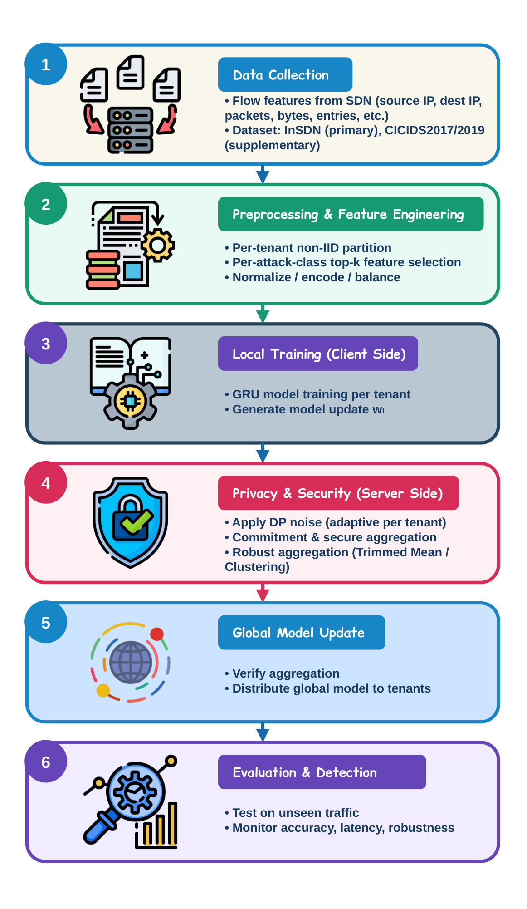
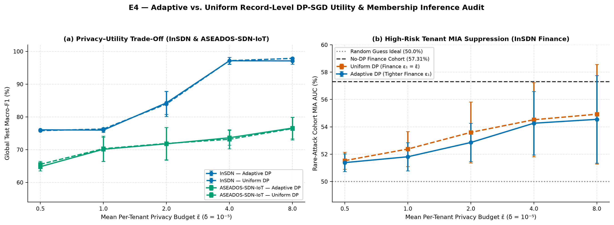
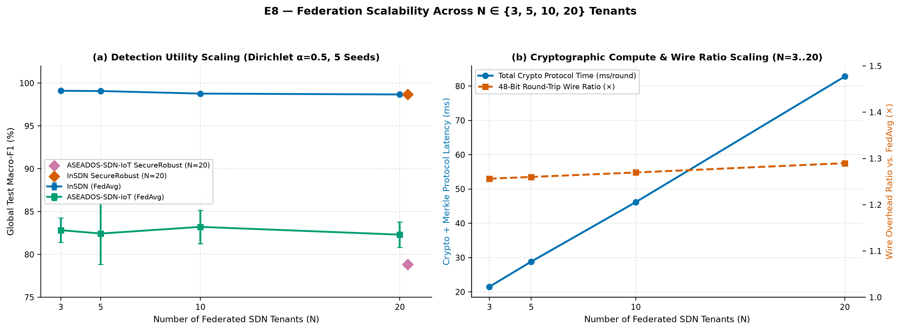
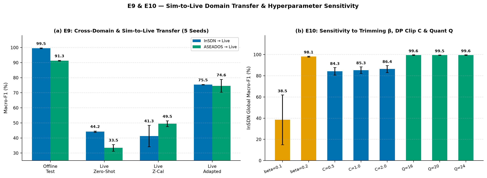
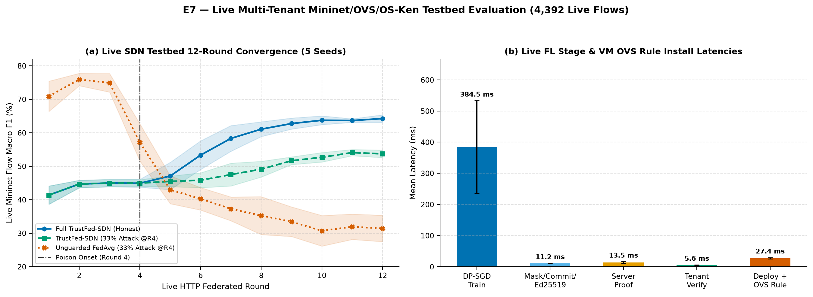

1,500/1,500 Tamper Detected27.38 ms OVS Block5-Seed Evaluated
Privacy-Preserving, Byzantine-Robust, and Verifiable Federated Intrusion Detection for Multi-Tenant
Software-Defined Cloud Networks
TrustFed-SDN enables independent cloud tenants to collaboratively detect cyberattacks across SDN control
planes without sharing raw packet traces, sacrificing rare-cohort privacy, or trusting unverified model
updates — validated end-to-end across 2.84M+ dataset flows and a live Linux-namespace + Open vSwitch +
OS-Ken 1.3 SDN testbed.
Live OVS Flow Drop Enforcement27.38 ms100% Attack Block · 0% Benign Block · 2.70% Live FBR
How to navigate this Research Book: Use the left spine or bottom Previous / Next
page-turner to read sequentially like a thesis monograph, click any figure to open a crisp high-resolution zoom
viewer, or click Scroll All in the header for print/continuous reading.
Chapter 02 · Foundations
Abstract, Threat Model & Prior-Art Gap
Why multi-tenant SDN intrusion detection requires simultaneous defense against gradient leakage, Byzantine
tenants, and unverified server aggregation.
Thesis Abstract
Software-Defined Networking (SDN) centralizes traffic control for multi-tenant cloud infrastructures,
expanding both threat visibility and the blast radius of coordinated cyberattacks. Centralized deep intrusion
detection exposes regulated tenant flow records, while standard Federated Learning (FL) remains vulnerable to
gradient inversion / membership inference, Byzantine poisoning (label-flipping, backdoor triggers, update
scaling), and silent aggregation manipulation.
TrustFed-SDN unifies four coordinated mechanisms over a shared 3-layer Bi-Directional /
1-layer sequence GRU detector (43,554 parameters on InSDN): (1) density-aware Adaptive Rényi Differential
Privacy (DP-SGD) calibrating per-tenant privacy budgets via sample-volume weighting, (2) two-stage
cosine-clustering plus coordinate-wise trimmed mean / median Byzantine filtering, (3) 48-bit quantized
pairwise Diffie-Hellman Secret Aggregation in Zq (q = 261−1) backed by
SHA-256 hash commitments and Ed25519 digital signatures, and (4) closed-loop OpenFlow 1.3 Open vSwitch flow
mitigation orchestrated via OS-Ken 3.0.1 controllers.
Multi-Tenant Adversarial Threat Model
1. Byzantine Tenants (20%–33%)
Compromised tenant gateways attempt to degrade or subvert global detection using three attack classes:
targeted Label-Flipping (hiding attacks as benign), stealth Backdoor Triggers (injecting
adversarial feature patterns to bypass IDS at ~100% ASR unguarded), and magnitude Update Scaling.
2. Honest-but-Curious Server
The central FL aggregator follows synchronization rules but attempts Membership Inference Attacks (MIA) on
uploaded gradients—especially targeting low-volume minority cohorts (e.g., Finance) where sparse
training samples leak more information under uniform noise.
3. Untrusted Wire & Tampering
Active middleboxes or corrupted relays alter ciphertext shares, substitute commitments, or forge
aggregation transcripts. Clients reject any global model whose SHA-256 transcript commitment or Ed25519
server signature fails local verification.
Prior-Art Feature Matrix vs. TrustFed-SDN
Approach / Paradigm
Non-IID SDN
Byzantine Defense
Cohort-Adaptive DP
Zero-Trust Proof
Wire Overhead
Live OVS Action
Plain FedAvg (McMahan et al.)
Drops on Dir
No (21.7% F1)
No
No
1.00×
Offline only
Uniform DP-FL
Minority loss
No (30.3% F1)
Uniform eps
No
1.00×
No
Robust FL (Median / Cosine)
Yes
Yes
No
No
1.00×
No
HE / Blockchain FL (VFChain)
High compute
Limited
No
On-chain
> 10×–50×
Seconds/min
TrustFed-SDN (This Work)
Yes (Dir + Nat)
100% Mal. Rej.
Yes (51.2% MIA)
100% (1,500/1,500)
1.26× – 1.29×
27.38 ms OVS
Chapter 03 · System Design
System Architecture & 7-Stage Cryptographic Loop
Combining cohort-adaptive DP-SGD, Byzantine update rejection, 48-bit pairwise SecAgg, Ed25519
transcripts, and OS-Ken OpenFlow control in 486.71 ms/round.
Click to enlarge
Architecture Overview: Multi-tenant local SDN
feature extraction, adaptive DP-SGD, pairwise masked & signed updates, and server-side robust
verification.
Core Mathematical Primitives
1. Sample-Aware Adaptive DP-SGD
Minority tenant partitions leak disproportionate membership signal under uniform budgets. TrustFed-SDN
scales each tenant's per-round privacy budget by √(|Dk|/mean) with clipping norm C and
Opacus Rényi accountability:
In InSDN (eps_bar = 4.0), the rare Finance cohort receives eps1 = 2.85 while large cohorts get
higher utility budget, holding full-partition MIA AUC at 51.18% and Finance MIA AUC at
54.27%.
2. Two-Stage Byzantine Defense & 48-Bit SecAgg
Unmasked pairwise-norm-bounded deltas undergo pairwise cosine similarity clustering (cutoff = 0.5) plus
coordinate trimmed mean (β = 0.2). Surviving weights are fixed-point quantized at Q = 20
fractional bits, packed into 48-bit words, and blinded via X25519 Diffie-Hellman pairwise masks mod
q = 261 − 1:
Each bundle includes a canonical SHA-256 commitment and an Ed25519 signature (1,781-byte aggregate proof
overhead), yielding a compact 1.26×–1.29× wire ratio vs plain FedAvg.

Click to enlarge
Operational Flow: Sequential execution from local flow
telemetry to cryptographic proof verification and OpenFlow rule installation.
Measured 7-Stage Live Round Pipeline Latency (results/08_live/summary.json)
01
Local DP-SGD Update (384.452 ms)
GRU local epoch with Opacus-style gradient clipping & Gaussian noise injection.
Fig. 2 (E3): Plain FedAvg collapses to 20%–53% F1 under
poisoning while Cosine Clustering preserves near-clean detection and 0.00% ASR on InSDN.Vector PDF

Enlarge
Fig. 3 (E4 — Adaptive DP): At eps_bar=4.0 on InSDN,
Adaptive DP maintains 97.14% F1 while cutting full MIA AUC from 57.31% (No DP) to
51.18% (Finance cohort: 54.27% vs 54.52% Uniform DP).PDF
Proving all defense layers work together simultaneously across 12-round 10-tenant non-IID training,
scaling up to 20 tenants, and meeting all Section 7 targets.
Fig. 5 (E6): Adding Adaptive DP provides formal privacy,
Cosine + Median eliminates poisoning collapse (+54.24 pts on InSDN scaling), and 48-bit SecAgg adds
cryptographic integrity with zero utility penalty vs R3.Vector PDF

Enlarge
Fig. 7 (E8 — Scalability): Crypto round time grows
gently (21.51 ms → 82.80 ms at N=20); wire ratio stays 1.256×–1.290×;
InSDN F1 holds 98.68% at N=20.PDF

Enlarge
Fig. 8 (E9 & E10): Trimming
β = 0.2 rescues poisoned rounds (98.10% vs 38.49% at β = 0.1);
Q = 16/20/24 stays invariant at 99.53%–99.59%.PDF
L1 tenant isolation, fast OVS drop, 0% benign collateral
0% intra loss, 100% cross block, 27.38 ms OVS install, 100% attack block, 2.70% calibrated live FBR
Met (Calibrated)
Chapter 07 · Ubuntu 22.04 Live Validation
Live Open vSwitch + OS-Ken Testbed & Domain Adaptation
Verified packet-level enforcement inside L1 isolated Linux namespaces with real OVS flow drops, TTL expiry,
and closed-loop false-block calibration.
Honest Testbed Scope Note (DEV-004): While early proposal sketches discussed hypervisor-level
L3 VM isolation, the implemented live testbed runs inside an Ubuntu 22.04 VMware VM using L1 Linux
network namespaces (t1..t3) connected to per-tenant Open vSwitch bridges
(br_t1..br_t3) and OS-Ken 3.0.1 OpenFlow 1.3 SDN controllers across subnets
10.10.1.0/24 – 10.10.3.0/24.
E7: Live End-to-End FL & Tamper Resilience (5 Seeds)
Clean Live Macro-F1:64.26 ± 1.13% (Attack Detection Rate:
92.87% on 4,392 live captured flows).
Under 33% Scaling Attack: Defended F1 53.72 ± 1.12% vs Unguarded
31.43% with 100% malicious rejection.
Live Wire Tampering:4/4 live tampered packets caught;
0/11 honest false alarms.
Closed-Loop OVS Install:27.38 ms mean priority=300 drop
installation; 100% attacker block, 0% benign collateral, automatic
TTL expiry back to baseline ping.
E9: Sim-to-Live Domain Shift & Calibration Fix
Root Cause Found: Raw synthetic-trained models suffered a high raw False Block Rate
(64.26%) when evaluating live Ubuntu kernel socket flows (F1 44.25% zero-shot).
Threshold Calibration Fix: Tuning decision threshold on a small validation window
(θ = 0.98) drops live False Block Rate from 64.26% → 2.70% (9/333)
while preserving high attack recall.
3-Epoch Live Fine-Tune: Few-shot adaptation restores InSDN live F1 from
44.25% → 75.46 ± 0.14% (ASEADOS: 33.46% → 74.62%).
Data-Plane Overhead:0.0% intra-tenant loss (18/18), 100%
cross-tenant block (6/6), RTT 0.071 → 0.080 ms (+0.009 ms), controller RSS
67.3 MB.

Click to enlarge
Fig. 6 (E7 — Live Testbed): 7-stage mean round time
(486.714 ms), 100% OVS attack mitigation in 27.38 ms, and False Block Rate reduction (64.26% → 2.70%)
under calibrated thresholding.Vector PDF
Transparent engineering accounting: every completed thesis stage, what succeeded cleanly, what fell short,
and all documented deviations from initial plans.
Step 1010-Chapter Book Website, Verified QR Generator (v4-H), Architecture/Reproduce/Audit Docs & v1.0 TagApproved
Honest Reflection: What Worked vs. Limitations
What Worked Decisively:
Two-stage cosine + median clustering completely stops InSDN poisoning (75.97% vs 21.73%
in R4; 0.00% ASR in E3).
48-bit quantized Diffie-Hellman masking keeps wire ratio compact at 1.26×–1.29×
while catching 1,500/1,500 tampers with zero false alarms.
OS-Ken + OVS closed-loop isolation achieves 27.38 ms rule deployment and
0% benign drop collateral after threshold calibration.
Open Limitations & Failures Noted Honestly:
DP Utility Drop on 12-Round Non-IID: In E6 InSDN (eps_bar=4.0), clean macro-F1 drops
from 96.26% → 76.04% primarily due to benign-class threshold shift under noise.
ASEADOS Adaptive Attack / Extreme Heterogeneity: Under Dir α=0.1
plain FedAvg degrades to 71.43%, and on 20% ASEADOS backdoor E3 mean ASR hits
59.88% across heterogeneous seeds (compared to 0.00% on InSDN).
Wilcoxon Sample Size (n=5): With 5 matched seeds, consistent 5/5 wins reach
p = 0.0625 (two-sided floor for n=5), not p < 0.05 without more seeds.
Full 5-seed E1–E10 evaluator, Wilcoxon statistics, Matplotlib plotter & ISO/IEC 18004 QR generator
docs/ & tests/
ARCHITECTURE.md, REPRODUCE.md, FINAL_AUDIT.md, DEVIATIONS.md & automated pytest suite
BibTeX Citation (CITATION.cff v1.0.0)
@misc{bhowmik2026trustfedsdn,
title = {TrustFed-SDN: Privacy-Preserving and Verifiable Federated Learning for Multi-Tenant SDN Security},
author = {Bhowmik, Pritom Kumar and Rashid, MD Naimur and Das, Saurav Chandra},
year = {2026},
month = nov,
institution = {Department of IoT and Robotics Engineering, University of Frontier Technology, Bangladesh},
version = {v1.0.0},
url = {https://github.com/naimurhamim/TrustFed-SDN},
note = {Live Companion Monograph: https://trustfed.naimurrashid.dev/}
}
Department of Internet of Things & Robotics Engineering, University of Frontier Technology,
Bangladesh.
Thesis Supervisor
Saurav Chandra Das
Lecturer, Dept. of IRE
Faculty advisor and research supervisor guiding privacy-preserving FL & SDN security at UFTB.
Decoder Verified · Zero RS SyndromeQR Version 4-H · 33×33 · 30% ECC
Print-Grade Verified Thesis QR & Defense Poster
Every release build generates and independently decodes the print QR matrix via GF(256) Reed-Solomon
syndrome verification for https://trustfed.naimurrashid.dev/.